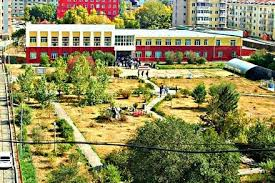
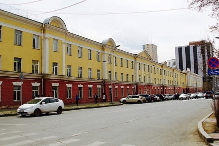

National University of Mongolia |
|||
| Эрдмийн хэт цахилвааы Хөгжлийн гал бадармой | |||
| Цэс
|


|
Мэдээлэл
МУИС-ийн оюутны 1,2,3,5-р дотуур байрны 1100 оюутанд хийсэн шинжилгээний хариу сөрөг гарлааМУИС -ийн оюутны 1,2,3,5-р дотуур байранд амьдарч байгаа 1100 оюутнуудыг “Ковид-19”-ийн хамар залгиурын болон өндөг цусны түргэвчилсэн шинжилгээнд хамруулах ажлыг БШУЯ, ЭМЯ, ЭМХТ, СБД дэх МХХэлтэс, МУИС хамтран өнөөдөр /2020.12.07/ зохион байгууллаа. Уг шинжилгээнд: Оюутны 1-р байр /255 оюутан, 8 ажилтан албан хаагч/ Оюутны 2-р байр /267 оюутан, 11 ажилтан, албан хаагч/ Оюутны 3-р байр /308 оюутан, 7 ажилтан, албан хаагч/ Оюутны 5-р байр /270 оюутан, 10 ажилтан, албан хаагч/, нийт 1100 оюутан, 36 ажилтан, албан хаагч хамрагдаж шинжилгэөни хариу бүгд сөрөг гарсан байна. |
Салбар сургуулиуд
|
| Бүх эрх хуулиан хамгаалагдсан | |||